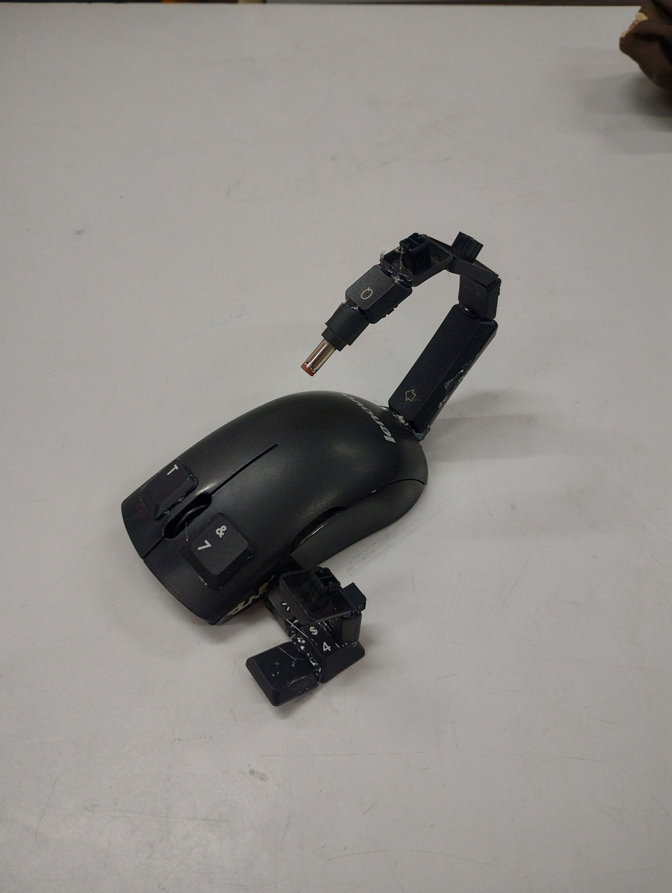
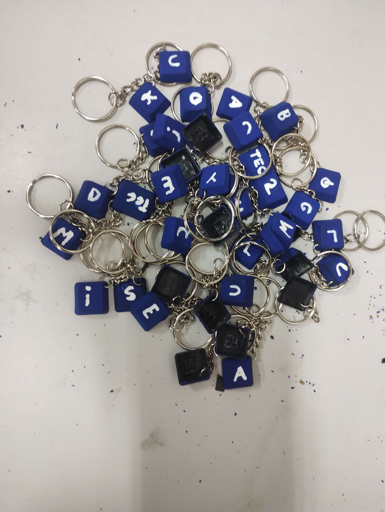
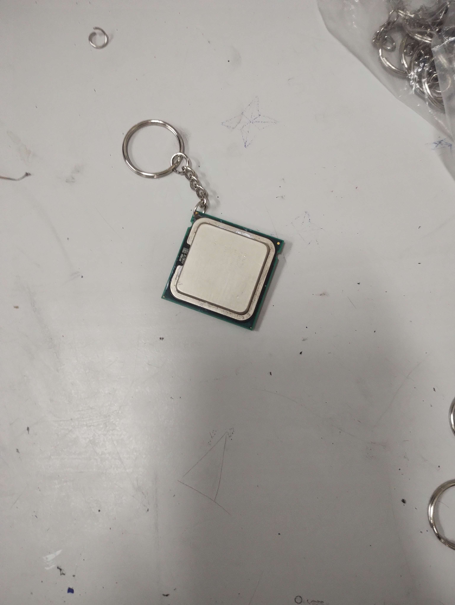
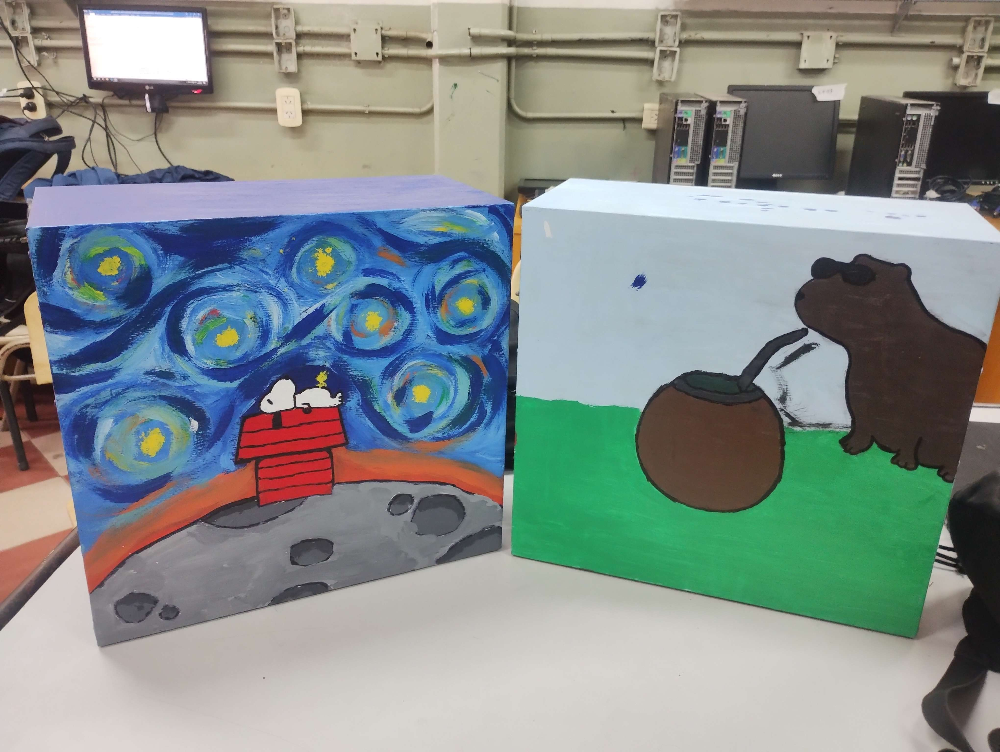

// ⓘ ¿A qué se considera basura electrónica? ⓘ
> La basura electrónica abarca todos aquellos dispositivos electricos o electrónicos que ya cumplieron su vida útil, y por lo tanto, son deshechados.
Los dispositivos que son deshechados generalmente contienen materiales dañinos, tanto como para la salud como para el medio ambiente. Estos dispositivos pueden ser teléfonos, computadoras, televisores, electrodomésticos, entre otros.
// ⚠︎ El impacto de la basura electrónica ⚠︎
> La basura electrónica es uno de los tipos de residuos de mayor crecimiento a nivel mundial. Esto se debe principalmente al crecimiento constante del consumo de equipos electrónicos (como electrodomésticos) en todo el mundo y a los ciclos de vida cortos de los mismos.
Es decir, la gente compra electrodomésticos, dejan de andar al poco tiempo y son deshechados, compran otro para reemplazarlo y se repite todo.
> Los materiales de estos aparatos electrónicos poseen mercurio, plomo y cadmio, los cuales pueden contaminar el agua, el aire y el suelo.
> En las personas, el mercurio produce daños al cerebro y el sistema nervioso; el plomo potencia el deterioro intelectual, ya que tiene efectos perjudiciales en el cerebro y todo el sistema circulatorio; y el cadmio produce fallas en la reproducción y posibilidad incluso de infertilidad. Estos son solo algunos ejemplos, en realidad hay más sustancias que son muy peligrosas, o incluso mortales D:
// ♻ ¿Qué hacer con la basura electrónica? ♻
> Ahora sabiendo todos los riesgos que supone, es fundamental desechar los residuos electrónicos en puntos de reciclaje para recuperar materiales valiosos y eliminar componentes peligrosos y tóxicos.
O también:
  
